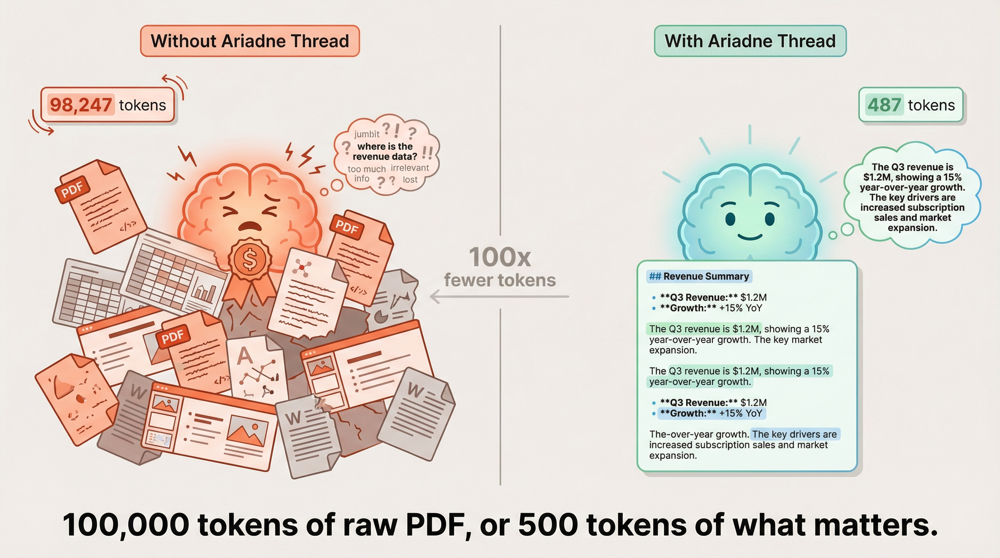

Mechanism 1 — Raw PDF bloat. Binary metadata, embedded fonts, and layout junk inflate a 4,500-word document from ~5,000 tokens of actual content to ~100,000 tokens in the context window. Every one of those extra tokens hits at frontier rates (~$3–$15/M for Sonnet-class through Opus-class).
Mechanism 2 — The LLM extraction loop. This is the bigger one. Without a pipeline, a frontier model has to figure out extraction itself: write Python, call pdfminer, debug table parsing, retry OCR, look at images with frontier vision rates. We're using the most expensive tokens available to do work a specialized pipeline does better for ~$0.002/doc.
Not just cheaper — better. A deterministic pipeline + purpose-built small models capture tables, layout structure, and image semantics more accurately than a frontier model improvising extraction code on the fly.